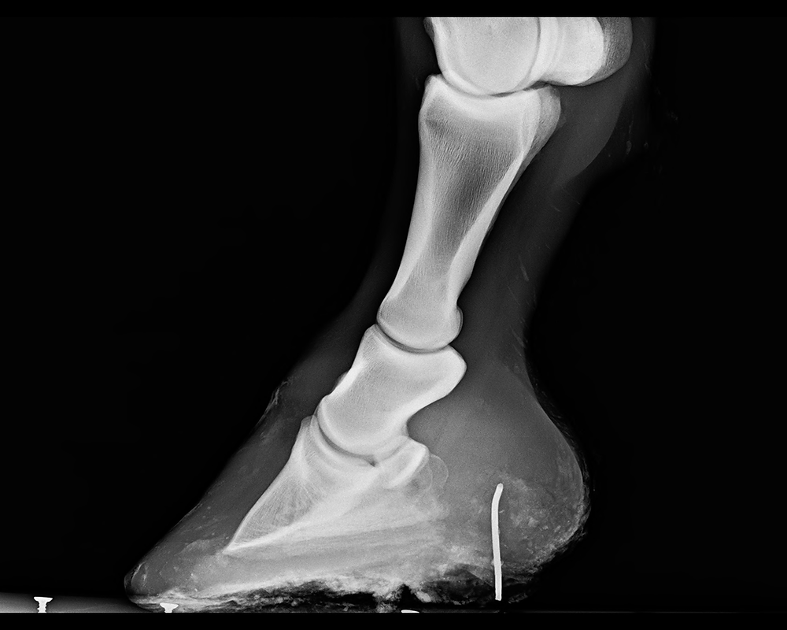

Going out to the pasture to find your equine companion three-legged lame can be quite traumatic. Most minds go straight to worse case scenario of broken bones and career ending injuries. Thankfully, worse case scenario is rare; however, how do you know?
Keeping yourself calm is the first and most important thing to remember. The second thing to remember is to assess the situation as best as you can and as safely as you can. Halter your fuzzy friends and bring them into a clean, dry and well light area. Gently run your hands down all four legs to check for heat, pain, swelling, cut or bumps. Running your hands along all four legs will help avoid missing a less than obvious injury or multiple injuries. Once the legs check out, pick up the foot that is most sore. Keep in mind, most horses will not bear weight on the foot with the problem and more often than not, we don't want them weight bearing on the injured leg. Gently clean out the hoof with a hoof pick and brush. Now, most of the time you will not find anything. A hoof abscess is the most common cause to a sudden four-legged lameness and will not visible from the outside. In those cases, soak the hoof in a solution of warm water with epsom salt. A couple of cups of epsom salt dissolved in a couple of gallons of warm water will help draw out most abscesses.
What happens if I find something ?!?! If you see the end of a nail or wire; now we have a much more urgent situation and calling your local veterinarian is necessary. It is best NOT to pull the metal object. It's extremely tempting to pull out the object that is causing so much pain; however assess the situation with the object still in place is best. Taking x-rays of the foot prior to pulling out the object allows us to be fully prepared for how to proceed. From the bottom, we have no idea how deep that object penetrates or if it could be involving a bone or tendon. Once, the nail is pulled, it can take up to 3 weeks for damage to be visible on an x-ray; which is often too late to be successful with invasive treatment. If x-rays indicate the nail could be involving a tendon or bone; aggressive treatment can begin right away and result in a more positive outcome.
Lameness cases can be complicated and scary for horse owners; but being prepared and having a good relationship with your local veterinarian will help relieve some of the 'lameness anxiety'.
